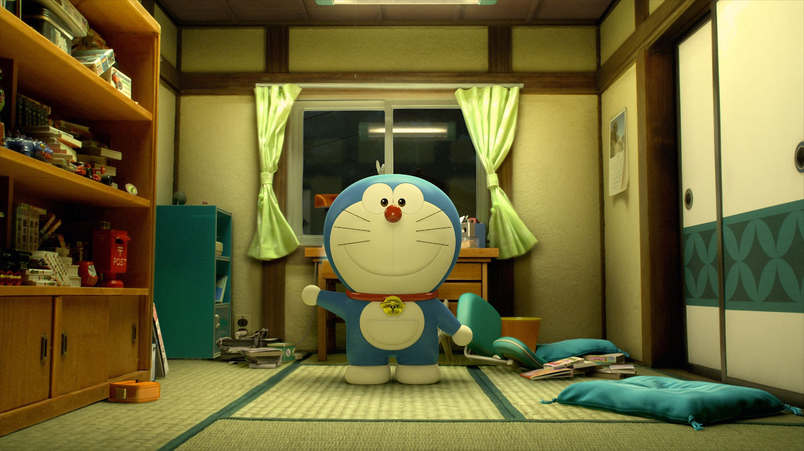

2112年9月3日诞生于日本东京的松芝工厂。在当日的量产线上是0号（第一台）之后所生产的1号（第二台）。制造过程中发生了事故，造成其中一颗螺丝掉落，成为一台“特别的”机器人。之后被送到机器人学校的特别班级，在那里遇到了“哆啦A梦七小子”，并和他们成为朋友。之后哆啦A梦参加机器人学校中举行的机器人销售会，当时还是幼儿的世修（セワシ）不小心按下了购买按钮，因此买下了哆啦A梦（出自《2112年哆啦A梦诞生》）。在《2112年哆啦A梦诞生》中，哆啦A梦作为照顾儿童用的机器人，在大雄的玄孙世修家工作。为了要改变差劲的大雄，世修决定叫哆啦A梦返回20世纪帮助大雄。 [1]
“哆啦A梦”是直接根据原作的日文原名“ドラえもん”音译而来。此一名称若要以意译来翻，则有许多不同看法。
香港媒体在报道中曾提及“哆啦A梦”的日文意思是“红豆包的守护者”。此外还有另一说，认为“ドラ”并非来自铜锣烧，而较可能来自于“野猫”（どら猫）一词，因为藤子·F·不二雄本人曾提到当初他发想哆啦A梦的造型之时，其灵感乃是来自于他所看到的一只系著铃铛的野猫。而某某“卫门”，则是日本江户时代常见的人名，藤子·F·不二雄许多作品主角都惯以某某“卫门”来命名，例如《21卫门（21エモン）》即是一例。而中国内地也有另外说法，Doraemon这个名字的由Dora和emon两个部分组成，其中Dora意为“神赐的礼物”，而emon是日文“卫门”的读音，Doraemon也就是相当于守护天使的含义。
然而1990年代或之前的港台盗版时期，哆啦A梦的漫画，在华人地区各有不同名称。光台湾就有机器猫小叮当（青文出版社早期）、超能猫小叮当（东立出版社早期）、神奇小叮当（大然文化早期）等。另外，其他各地尚有小叮当（阳铭书局早期）、机器猫（人民美术出版社）和叮当（玉郎漫画）译称。
藤子·F·不二雄病逝之后，朝日电视台继承《哆啦A梦》的著作权，并依其遗愿“希望亚洲地区统一改以日本音译，使每个不同地方的读者只要一听就知道在讲同一个人物”；于是促使台湾大然文化在1997年以《哆啦A梦》为中文名称，发行小学馆授权的《哆啦A梦》台湾中文版。其后，香港的青文、文化传信、中国大陆的吉林美术出版社（吉美）这些漫画丛书发行代理商也陆续跟进。电视动画播放单位华视、TVB和央视大部份于2000年代初开始亦更改了译名。至2005年，阿福、技安最后也相继改名。
